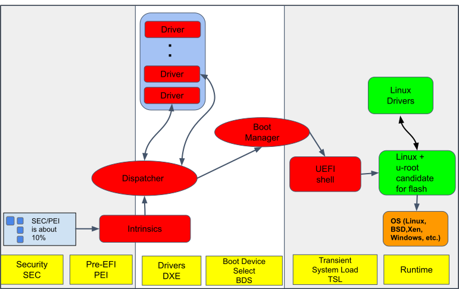

The LinuxBoot project at Google
Google runs workloads across a number of clusters each with up to tens of thousands of machines. Firmware runs on these machines when they first start up. Google is pushing the state-of-the-art in many places including firmware. The discussion here about Google's implementation of LinuxBoot is limited to replacing specific UEFI firmware functionality with a Linux kernel and runtime. Over the years this project has grown to include various initiatives with the overarching goal of moving from obscure, complex firmware to simpler, open source firmware.
Team
There have been a number of contributors to the Google LinuxBoot project including:
- Ron Minnich (technical lead)
- Gan-shun Lim
- Ryan O'Leary
- Prachi Laud
- Chris Koch
- Xuan Chen
- Andrew Sun
Ryan O'Leary is one of the Open Compute Platform Foundation Open System Firmware project volunteer leads and Ron Minnich is the Open Compute Platform Foundation Incubation Committee Representative.
Goal
The primary goal of Google's LinuxBoot is to modernize the firmware by simplifying it to technologies engineers understand and trust. In UEFI systems, LinuxBoot consists of a "full stack" solution of stripped-down UEFI firmware, a Linux kernel, and an initramfs with tools written in Go. Although these components all make up one bundle stored in ROM, there are three parts: the closed-source EFI firmware, a Linux kernel, and u-root. The Linux kernel is an unmodified kernel. The user-space initramfs image with Go tools for system booting is available as u-root. Due to this modularity, LinuxBoot can be used with a variety of systems. In many cases, for example, the same kernel and initramfs have been used, without recompilation, on both AMD and Intel x86 boards. The UEFI on these boards is always specific to the board, however.
Converting a UEFI firmware image to use LinuxBoot
The conversion to LinuxBoot starts with generic UEFI. A UEFI computer boots in four main phases. The security phase (SEC) and the Pre-EFI Initialization Stage (PEI) are responsible for low-level operations to prepare the hardware and are usually specific to the hardware they are implemented for. After these two stages, the Driver Execution Environment (DXE) loads various drivers, and then the Boot Device Select (BDS) phase begins.
It is not possible to modify the SEC and PEI stages, as their components are tightly coupled to the chips on the board; even small changes to the chips require new SEC and PEI stages. LinuxBoot starts during the DXE stage, resulting in most of the drivers (and their associated attack surface) not being loaded. Instead, a Linux kernel is loaded as if it were a driver. By loading during the DXE, LinuxBoot runs after the first two stages of the UEFI, but takes over after that point, replacing the UEFI drivers. It therefore completely replaces a large portion of the boot process.
Phases of the project
Google's LinuxBoot project is focused on moving UEFI boot functionality into the kernel and user-space. That is, converting UEFI firmware to run LinuxBoot. The project has taken the standard UEFI boot process and converted it to LinuxBoot for production environments. The steps to reach this goal are described below.
Step 1. Reduce or replace UEFI components
UEFI contains proprietary, closed-source, vendor-supplied firmware drivers and firmware. LinuxBoot replaces many Driver Execution Environment (DXE) modules used by UEFI and other firmware, particularly the network stack and file system modules, with Linux applications.
The following diagram shows the phases of the UEFI boot process. The items in red are components that are either reduced or eliminated with LinuxBoot. The dark blue items on the left cannot be changed.

In the real FLASH part, the SEC and PEI are actually only 10% of total, so we reduce the size of those boxes in this and following diagrams.

Another part of the conversion process was to modify the UEFI boot process to boot a LinuxBoot image as shown below.

Step 2. Delete or replace as many proprietary DXEs as required to make step 3 work. In most cases, none need to be removed.
Step 3. Replace the UEFI shell with a Linux kernel + u-root

When Linux boots it needs a root file system with utilities. LinuxBoot provides a file system based on u-root standard utilities written in Go.
Step 4. Through trial and error, continue to remove DXEs until you can't remove anymore.
The DXEs are delivered as binary blobs. There are three ways to handle them:
- The most desirable is to remove them and let Linux drivers take over what they did. This works well for USB, network, disk, and other drivers, as well as network protocols and file systems. In fact we have resolved many system reliability and performance issues just by removing DXEs!
- The second way is to replace the DXE with an open source driver. This is less desirable, as the DXE environment is not as hardened as the Linux kernel environment.
- The final, least desired option, is to continue to use the DXE. This is required if the DXE contains proprietary code that "tweaks" chipset settings, for example, memory timing or other controls, and there is no chance of ever bringing them to open source.
Step 5. Replace closed source DXEs with open source
If we can build a DXE from source, we can use utk to:
- Remove the proprietary one
- Replace it with one built from source

Step 6. Next steps: complete LinuxBoot
LinuxBoot is currently in production, but the LinuxBoot project development continues to provide an open-source solution that does the following:
- Brings up the Linux kernel as a DXE in flash ROM instead of the UEFI shell.
- Provides a Go based user-space that can then bring up the kernel that you want to run on the machine.
- Enables writing traditional firmware applications such as bootloader, debugging, diagnosis, and error detection applications as cross-architecture and cross-platform portable Linux applications.
The complete LinuxBoot solution is shown in the following diagram.